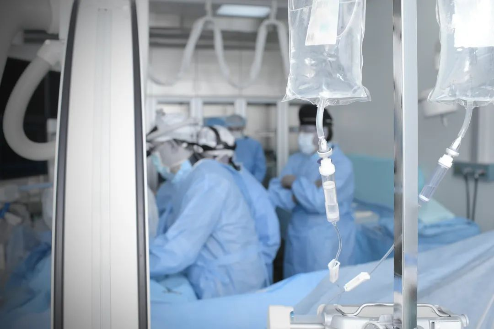
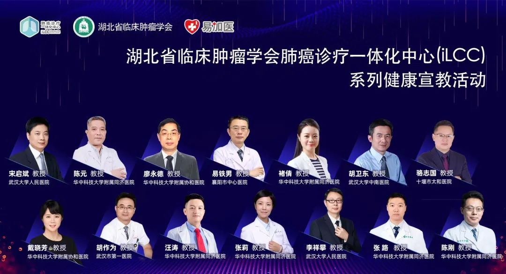
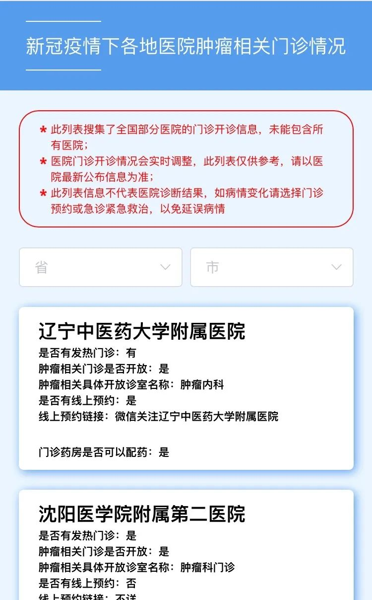
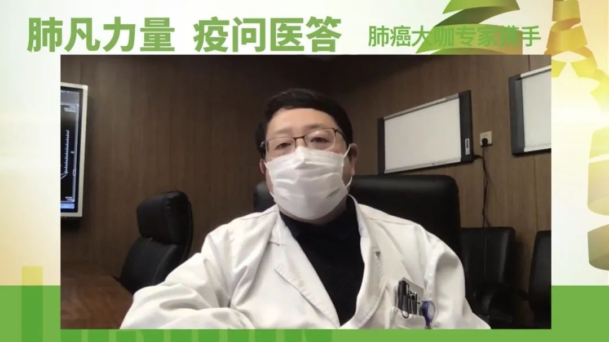
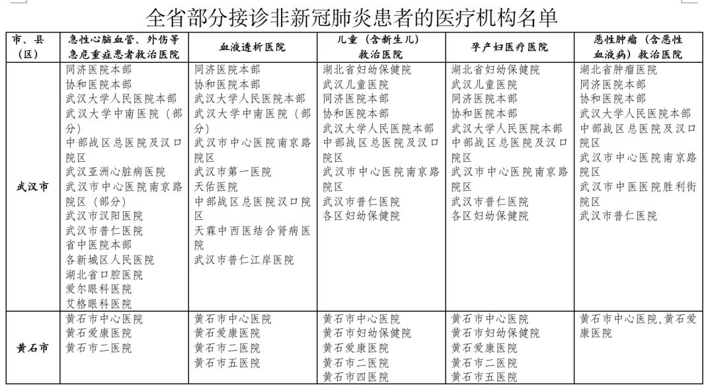

一名儿科医生的特殊“抗疫”征程
原文链接 备份链接 . 一名儿科医生的特殊“抗疫”征程 小儿内分泌林医生 02-21 22:25 投诉 阅读数：40万+ . 作为一名儿科医生，能投入到这场没有硝烟的战争中，我深表荣幸 从2020年1月开始，我就被调至位于沌口开发区 …

疫情期间，焦虑是他们的普遍情绪
“焦虑”是整个春节都萦绕在钱琳（化名）心头的情绪。
钱琳的母亲是一名肺癌患者，疫情之前，就在去年12月才刚刚带母亲做了复查，医生给出的结果是，“病情控制的很好，建议继续吃药”。不出意外，母亲依靠肺癌靶向药，可以像过去五年一样继续稳定的带癌生活。
但突如其来的疫情打乱了这一计划。2月4日，母亲的肺癌靶向药物只够坚持三天了，但随着新冠肺炎确诊病例不断增加，越来越多医院被征用，资源向新冠肺炎患者倾斜，“出门去医院买药”变得异常艰难。钱琳担心，如果不能按时吃药，母亲病情再一次复发了怎么办。

对于癌症患者来说，疫情期间，焦虑是他们的普遍情绪。一方面面临着被感染的高危风险，另一方面，封城封路以及暂停常规医疗服务又使他们面临缺医断药、病情恶化的危险，满足癌症患者的医疗需求成为亟待解决的切实问题。
而关于他们的救治，其实有人已经在行动。
每场1000多人的线上问答
疫情期间，宋启斌变得更加忙碌。用他的话说，以前下班回家可以歇着，现在下班就拿起手机，回复患者消息。
宋启斌是武汉大学人民医院肿瘤中心主任，也是湖北省临床肿瘤学会理事长。武汉作为此次新冠肺炎疫情的重点疫区，1月23日宣布封城后，很多医院门诊也随之停诊，这对于癌症患者来说，更是雪上加霜。
1月28日，武汉市新冠肺炎防控指挥部医疗救治组下发通知，要求做好疫情期间特殊病人的医疗保障工作，其中专门提到了要满足慢性肾衰病人、孕产妇、外科疾病等人群的医疗保健服务需求。
但面对疫情蔓延，非危急重症患者也不建议在此时期来院就诊，线下诊疗不再忙碌，一些就诊活动转到了线上。
宋启斌表示，考虑到肺癌不仅是第一大癌种，拥有最多的患病人群，也是此次新冠肺炎的易感人群，一旦合并感染很容易发展成重症。于是，依托湖北省临床肿瘤学会肺癌诊疗一体化中心(integrated Lung Cancer Center，简称iLCC)平台，他联合了该平台上近150名专家，针对肺癌患者群体开启线上诊疗模式。

“他们非常需要帮助，但我们又不能到病人身边去，所以就做了很多尝试。”宋启斌说道。
根据不同患者的不同诉求，团队专家给出相应的医学建议。如对于一部分已经确认但未能及时入院的患者，错过治疗的最佳窗口期将变得更加危险；对于经过治疗需要定期随访复查的患者，则需要根据具体病情建议适度延期或者及时续药。
他还组织湖北省临床肿瘤学会的多位专家撰写了一份《疫情期间肿瘤患者居家生活方式的医学专家建议》，对患者在吃、补、运动等方面给出详细的医学建议。同时还有《肿瘤免疫治疗》、《肿瘤抗血管治疗》和《乳腺癌诊疗》等，以期给疫情下的癌症患者专业指导。
就像同样身处武汉的一家三甲医院急救中心医生的李春，他在抗疫一线工作时被确诊为新冠肺炎，为了不占用紧张的床位资源选择居家隔离，并在隔离期间坚持为发热病人提供网上问诊。他说，“为了保证看病质量，医院限制我们每天最多看50个人，我一上线就调整到200个。但没想到还超标了。第二天，我调整到300个……现在把上限调整成多少，就会有多少患者。打开手机，源源不断的咨询请求，手机的运行速度根本跟不上。”
出于医生的责任感，他们希望通过借助在线问诊平台帮助到更多患者。“我们每场线上活动都有1000多人在网络平台上互动。”宋启斌介绍，通过这种线上门诊的方式，患者与医生进行详细的病情交流，虽然不能面对面，“但也是我们能做的一些事情。”
50万人次的公益直播
对癌症患者的救治，除了政府部门和医疗机构，不少企业也在积极参与，协助让越来越多的医生加入到线上义诊，用专业的知识协助患者解决诊疗难题。
觅健创始人刘文桂就带着这样的初心。觅健是癌症及重症患者互助交流社区及院外康复管理平台，也是肿瘤领域特别是肺癌领域最早的患者线上社区之一，平时患者多在平台上学习疾病知识，交流康复经验。
疫情发生后，刘文桂发现平台患者活跃度翻了一倍，讨论的内容方向多集中在“医生开诊什么情况”“现在我这里没有药了怎么办”“复查延期会不会有影响”……因为城市封锁、交通管制、资源紧张等种种原因，不少的患者及家属对于库存用药服完或治疗延迟后将面临的局面而忧心忡忡。

基于这一情况，觅健开展了一系列针对性活动。对于不同需求的患者分别开通医院肿瘤相关门诊开放信息查询工具，让患者可以及时了解附近医院开诊信息；配备全国各地肿瘤药品零售药店地图索引工具及各地长处方政策查询，指导患者购药方便。


其中最重要的是，由上海交通大学附属胸科医院肿瘤科主任陆舜教授牵头的全国百位专家免费义诊活动。该活动由中国抗癌协会肺癌青年委员会、中国抗癌协会肺癌专业委员会、中国初级卫生保健基金会、中华医学会肿瘤学分会肺癌专业委员会联合主办，觅健、零氪、阿斯利康联合支持，针对肺癌患者切实关心的问题展开在线答疑公益直播和线上免费义诊。
“由于出行的不便，加上很多医院减少了门诊量，肺癌患者对于病情的延误、疫情下的自我防护等存在诸多困惑，为此，我们联合了全国各地一百多位肿瘤专家，利用业余时间做免费一对一的义诊，让患者都可以有机会和全国的专家网上交流，从而指导患者得到规范化诊疗。”陆舜教授在首场公益直播中说道。

陆舜教授在“肺凡力量·疫问医答”做线上公益直播
家住浙江舟山的一位55岁肺癌患者李煦（化名）就是获益者之一。
2018年底李煦确诊多发性肺癌，一直在上海胸科医院治疗，目前结节太多已不能手术，持续服用原研靶向药易瑞沙治疗中。因为从确诊到后续治疗一直都是在上海进行，但如今受疫情影响，到上海需要先隔离14天才能就诊，就会出现病情延误情况。
通过觅健专家线上义诊渠道，李煦如愿实现就诊，并通过线下药店配送服务，足不出户就拿到了药物，也避免了来回上海和医院就医过程中的交叉感染风险。
刘文桂说，目前在觅健平台上已经举办了48场关于肿瘤疾病的公益直播，观看人次超过50万次。
与癌症患者一起，与生命赛跑
最近抗击疫情不断传来好消息，全国很多地区新增病例“清零”，中国工程院院士张伯礼在接受媒体采访时表示，武汉也有望在三月底实现新增病例“清零”。
疫情好转下，医疗资源的挤压得以缓解，癌症病人正常的医疗秩序将逐步恢复。2月17日，湖北省卫健委公布全省接诊非新冠肺炎患者的医疗机构名单，要求各地做好疫情期间非新冠肺炎患者医疗救治工作。

湖北省部分接诊非新冠肺炎患者的医疗机构名单（来源于湖北省卫健委官网）
作为疫情中新冠肺炎重症患者定点救治医院，宋启斌所在的武汉大学人民医院，也于3月10日在其官网宣布，该院首义院区（老院区）将分步、有序恢复普通门诊。
但对癌症患者的帮助仍在持续。宋启斌表示湖北省临床肿瘤学会肺癌诊疗一体化中心(iLCC)平台义诊活动准备了近30场，“每天都在做”。
而距离湖北700多公里的浙江，也在依托浙江省抗癌协会肺癌诊疗一体化中心（iLCC）项目，开展“肺癌专家线上视频患教、互动答疑”公益活动，组织本省权威肺癌专家，通过视频网络面对面提问解答的形式，为肺癌患者答疑解惑、排忧解难。
“公益直播和义诊平台每周会安排三至四场，线上诊疗热度还在持续，不会随着门诊恢复而快速降下来。”刘文桂相信以后线上诊疗将成为未来线下医疗的就医补充。
疫情之下，没有人能置身事外，这是一场群体战“疫”。从支援疫区的前线医护人员，到捐款捐物的社会各界人士，从忙到“跑断腿”的快递小哥，到居家抗疫的个人，以及在疫情期间为非冠患者变得异常忙碌的医生、企业和相关人员，都在为了相同的目的在努力，人人都在贡献，人人都是英雄。
疫情终将过去，当再回想起2020年的最初，温暖和感动我们将一直铭记。
本文仅代表作者观点，不代表本刊立场
值班编辑：石若萧
推荐阅读
▼


原文链接 备份链接 . 一名儿科医生的特殊“抗疫”征程 小儿内分泌林医生 02-21 22:25 投诉 阅读数：40万+ . 作为一名儿科医生，能投入到这场没有硝烟的战争中，我深表荣幸 从2020年1月开始，我就被调至位于沌口开发区 …
原文链接 备份链接 新冠肺炎疫情的防控正在逐步进入平稳轨道。全国31省市报告确诊病例在逐日减少，医院扩建、全民隔离，一部分患者也陆续出院。 这场前所未见的疫灾，让多少人体会了一次死里逃生。但与此同时，还有另一部分人，在依然严峻的寒冬冰封里 …
原文链接 备份链接 有时候半夜突然想到某个可能的漏洞，惊出一身冷汗。 记者 | 黄 祺 抗击新冠肺炎疫情的紧要关头，医院不能失守。 中国疾控中心2月17日的一份研究报告显示，全国已有3019名医务人员感染了新型冠状病毒，其中包括1716 …
原文链接 备份链接 澎湃新闻记者 陈斯斯 “‘我是不是感染了新冠肺炎？’这个是线上问诊出镜率最高的问题。”2月17日，上海市同济医院精神医学科医生刘飞这样告诉澎湃新闻记者。 这些天，同济医院接到了大量的网络、电话和门诊等线上和线下的求助和 …
原文链接 备份链接 *************▲*************2020年1月31日，发热门诊收费员穿着防护服工作。（新华社/图） 全文共3713字，阅读大约需要8分钟。 一些原本节假日还忙着开会“飞刀”的外科医生，最近基本 …